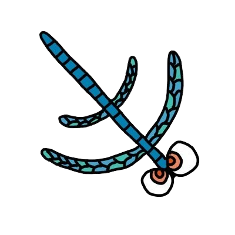

PasswordBox ― パスワード生成・管理
パスワードを生成・管理できるアプリです。既存のパスワードマネージャは管理機能しかないことに気づき、ユーザーが自由にパスワードを扱えるようにしたいと考えて作成しました。

モバイルアプリの力で、毎日を少し楽しく、少し便利に。
iOS / Android アプリエンジニア。受託系 Web 企業にて開発中。
2023年4月からモバイルアプリエンジニアとして、iOS と Android のアプリケーション開発に携わっています。 特に iOS アプリケーションの開発を得意としており、Swift・UIKit・SwiftUI を用いた実装から保守、新卒教育まで幅広く担当してきました。
モバイルアプリの力で社会課題を解決し、より楽しく、より便利な世の中を作りたい。そんな思いを胸に、日々アプリ開発とアウトプットに取り組んでいます。
個人でもアプリを開発・公開しているほか、勉強会での登壇や技術記事の執筆も行っています。お気軽にお声がけください。
パスワードを生成・管理できるアプリです。既存のパスワードマネージャは管理機能しかないことに気づき、ユーザーが自由にパスワードを扱えるようにしたいと考えて作成しました。
iOS Osushi のモバイルアプリ版です。投稿された記事を閲覧でき、お気に入りに登録するとオフラインでも読むことができます。